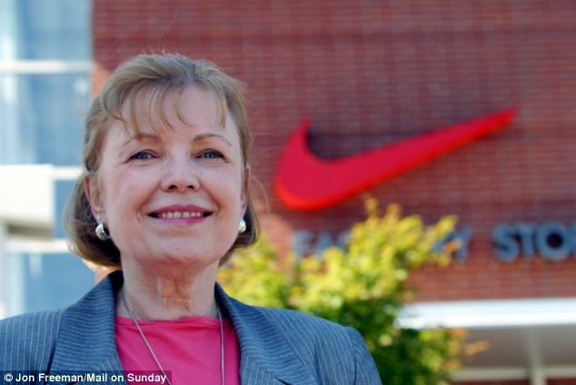
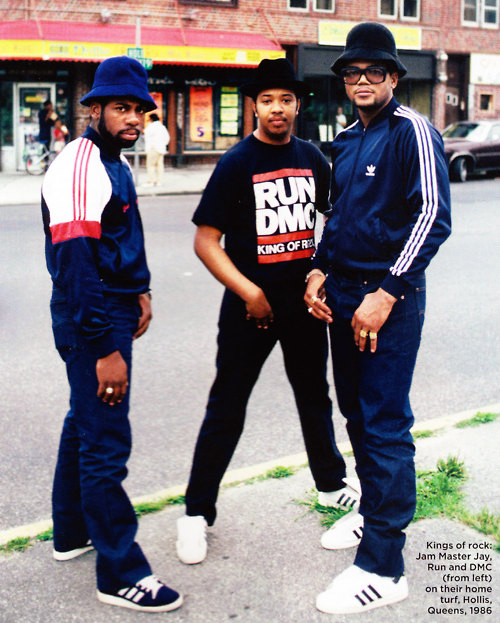

미국의 스포츠 용품 회사. 대표 상품인 운동화를 비롯해 의류, 모자 등 다양한 제품을 판다. 1964년
'블루 리본 스포츠'라는 이름으로 시작하여 1971년 '나이키(NIKE)'라는 상호로 바꿨다. 참고로 나이키의
어원은 그리스의 승리의 여신 니케(Nike)에서 유래되었다고 한다. 현재 전세계 스포츠 용품 시장에서 라이벌격인
아디다스를 제치고 독보적인 스포츠 브랜드 1위 기업으로 '애플', '구글', '코카콜라', '맥도날드' 등과 함께
미국을 대표하는 기업 중 하나이기도 하다. 미국 공홈에도 온라인 스토어가 있으며, 델타 항공의 스카이마일스 쇼핑이나
아메리칸 항공의 어드밴티지 e-쇼핑 사이트를 경유하여 마일리지도 적립받을 수 있다. 문제는 이 온라인 스토어가 한국
카드를 거의 안 받아 준다는 것. 대개 나이키 공홈의 온라인 스토어에서 구매하려면 카드를 직접 이용하기 어려워서
페이팔을 많이 이용한다고 한다. 아니면 피니시라인 같은 사이트를 이용하는 경우도 있다.
2.로고
흔히 나이키하면 떠올리는 스우시(Swoosh) 로고는 1971년 포틀랜드 주립대의 그래픽 디자인 전공
대학원생 캐롤린 데이비슨(Carolyn Davidson)이 필 나이트의 제의를 받고 단돈 35달러에 제작했다. 이
35달러도 처음부터 단가가 정해져있는 것이 아니라 시간당 2달러여서 17시간 30분을 만들고 만든 시간에 따라
35달러를 받았다고 한다. 인플레이션을 감안하면 약 211달러 정도라고. 나이트는 데이비슨에게 로고를 의뢰할 때
로고가 단순하고 부드러우며 동적인 느낌을 전달해야 한다고 주문했고 또한 아디다스의 로고와는 전혀 달라야 한다고
말했다. 데이비슨이 로고를 완성하고 나이트와 경영진들에게 보여주자 나이트는 "별로지만 보면 볼수록 좋아질 것 같다.
(I don't love it, but I think it will grow on me.)"라고 밝혔다고 한다.
로고가 발탁되고나서 데이비슨은 뭔가 아쉬운지 로고를 개선하고 싶다고 했지만 나이트는 마감 기한을 맞춰야해서
거절했다고 한다. 이 로고는 1971년 상호를 나이키로 바꾸면서 공개되었다. 로고가 공개되고 나서 나이키의 설명에
따르면 이 로고는 니케의 영혼과 날개를 상징한다고 한다. 1971년부터 자잘한 변화가 있어왔지만 현재는 NIKE
글자가 달린 버전과 안 달린 버전만 있다
사모트라케의 니케
1971~1978년 로고
1978~1995년 로고

스우시 로고를 만든 캐롤린 데이비슨 여사
데이비슨의 말에 따르면 1983년 9월, 나중에 나이트가 로고의 디자이너인 데이비슨에게 감사를 표하며
깜짝파티로 나이키 로고 모양의 다이아몬드가 박힌 금반지와 나이키 주식 500주를 선물했다고 한다. 보통 회사가
대성공을 이루고 나서 페이를 적게 받은 디자이너들이 땅을 치고 후회하는 경우가 많은 것을 생각하면 도의적으로 후하게
받았다고 할 수 있다. 그 덕에 캐롤린 데이비슨은 백만장자는 아니어도 편하게 살고 있다고 스스로 말하기도 했다.
한동안 나이키에서 일했으며 2000년 은퇴했다. 특히 현재에 와선 이 로고가 세계에서 가장 유명한 로고가 되었으며
그 자체로 하나의 브랜드가 되었다. 마이클 조던부터 타이거 우즈, 로저 페더러, 크리스티아누 호날두 등 수많은
선수들이 나이키의 협찬을 받아 장비를 입고 홍보를 하면서 이 로고가 자연스레 노출이 많이 됐기 때문이다. 소비자들이
운동선수와 브랜드를 연결짓는다는 심리를 이용한 것이다. 1988년부터 밀어온 슬로건인 Just Do It과 함께
나이키의 대명사가 되었다.
3.역사
1957년 미국 오리건 대학교에서 만난 운동선수 필 나이트(Phil Knight)와 코치 빌
바우어만(Bill Bowerman)에서부터 시작되었다.
그들에게는 운동화라는
공통의 관심사를 가지고 있었고 대학을 졸업한 필 나이트는 스탠포드 경영대학원에 진학하고 빌 바우어만은 여전히 코치로
남아 있었지만 미국의 운동화 시장을 독점하고 있는 독일의 견제와 기록 향상을 위해 고성능 신발의 영향력을 각각
생각하고 있던 그들은 의기투합하여 1964년 블루 리본 스포츠 (Blue Ribbon Sports, BRS)를
설립하였다.
이후 1976년 브랜드 광고를 하게 되고 순식간에 성장하여
1980년에는 미국 운동화 시장의 절반을 집어삼키게 된다. 이때 쯤부터 아디다스는 전세계 시장 지분에서 나이키에게
완전히 밀렸다고 볼 수 있다. 나이키의 매출은 마이클 조던과 협업으로 제작한 에어 조던 시리즈의 성공으로 급상승하게
되었다. 참고로 에어 조던 시리즈는 농구 황제 마이클 조던의 스토리텔링으로 더해져 하나의 문화로 자리잡게 되었는데,
실제 나이키는 조던 브랜드를 독자적으로 런칭하여 운영 중이다. 그리고 에어 조던의 성공으로 큰 매출을 올린 나이키는
이후에도 타이거 우즈, 로저 페더러, 호나우두, 크리스티아누 호날두, 코비 브라이언트, 르브론 제임스 등 각 분야의
스타들과 계약을 맺어 하나의 라인을 런칭하고 스토리텔링을 불어넣는 마케팅 방법을 고수하게 된다.
나이키는
많은 회사들을 인수한 것으로도 유명하다. 1988년 콜한을 인수한 것을 시작으로 1994년 바우어 하키(나이키
바우어)를 인수하고 2002년에는 헐리를 인수했다. 2004년에는 스타터, 2008년엔 엄브로를 인수했다. 하지만
너무 여기저기 손대는 것 같은지 자신들의 중심 사업에 다시 집중하기 위해 스타터, 바우어 하키, 엄브로, 콜한
순으로 처분되고 현재는 컨버스와 헐리만 남아있다
- 1989년 삼나스포츠로 사명을 변경한다. - 1994년 전체 지분을 나이키가 인수하고
나이키스포츠 코리아로 재출범한다.
5.광고
나이키의 필 나이트는 광고의 중요성을 굉장히 강조했는데 이렇게 말하기도 하였다. 이는 상품을 광고에 직접
보이거나 선수들에게 협찬을 해주면서 광고를 한다는 뜻으로 해석할 수 있다.
최초의 에어 조던 광고 후에 에어 조던 29에 프린트되어 나왔다.
수많은
스포츠 스타들이 나이키 CF를 거쳐갔다. 마이클 조던부터 시작해서 타이거 우즈까지...
2018년 9월 나이키는 "Just Do It" 30주년 광고 캠페인에 전 미식축구 선수 콜린
캐퍼닉(Colin Kaepernick)의 얼굴과 함께 의미심장한 문구를 써서 화제에 올랐다. 광고 영상 몇몇
구매자들이 이에 나이키에 항의하는 의미로 자신들이 산 나이키 신발을 불태우는 영상을 올렸으나, 애초에
Kaepernick을 지지할 만한 사람들(진보, 다인종, 도시)이 나이키나 다른 소위 힙한 브랜드들이 노리는 주요
고객층이고, 기대했던 대로 소셜 미디어에서 화제가 되었고 기존 타겟층의 브랜드 충성도가 높아진 게 확연하기 때문에
나이키 측에서는 콧방귀도 안 뀌고 있는 상황이다. 주식은 광고 공개 이후 폭락했다가 다시 회복하고 상승세를
이어가면서 오히려 나이키 주식을 살 것을 권장하기도 했다. 실제로 광고 후 나이키 온라인 매출이 31% 상승했다.
하지만 나이키가 자신들의 신발을 만들고 있는 (하청업체) 공장에서 아동착취 등 인권유린을 하는데도 불구하고 이런
광고를 하는 것이 위선적이며 깨어있는 척("woke-washing")이라는 비판도 나오고 있긴 하다.
6.제품군 및 대표제품
많은 자회사를 보유하고 있는데 대표적으로 헐리, 컨버스 등이 있으며 같은 나이키라도 브랜드가 상당히 많다. 에어
조던, 나이키 골프, 나이키+, 나이키 프로, 나이키 블레이저, 에어 포스 원(신발), 나이키 덩크, 에어맥스,
나이키 스케이트보딩, 나이키 풋볼 등이 있다. 콜한, 엄브로는 이전에 자회사였다.
사실상의
본업과 다름없는 육상은 물론이고 축구, 농구(에어 조던), 수영, 골프, 스케이트보드, 야구 등 굉장히 다양한
종목의 스포츠 용품을 제작 판매 중이다. 전문 트레이닝 라인의 성능도 좋지만, 패션 브랜드로도 나름 위세를 떨친다.
원래는 전문 트레이닝 라인이었지만 어쩌다 보니 패션 라인으로 팔리는 것들로는 에어맥스, 에어포스, 덩크 등이 있다.
미국에서도 나이키 신발은 그리 싸지 않은 편이지만, 그럼에도 불구하고 나이키의 점유율과 인지도 덕분인지 대중화
되어있다.
대표적인 운동화로는(에어 조던은 나이키 산하이나 자체 브랜드임으로
제외)
코르테즈
나이키 최초의 기능성 운동화이자 상징적인 제품이며 오니츠카 타이거의 납품 업체에서 벗어나 비로소 독자노선을 가게
된 계기를 만든 제품. 현재도 상당한 인기를 자랑한다.
에어포스 1
컨버스 올스타, 아디다스 슈퍼스타와 더불어 오랜 기간 사랑받은 범대중적 제품. 현재는 라이프스타일군으로
분류되어 패션화처럼 취급받지만, 사실 원래는 나사 직원의 아이디어 제안으로 만들어진 에어 달린 기능성
농구화였다. 현재는 세월이 흘러 기능성보단 스트릿 패션의 대명사이며 특히 힙합 패션의 큰 혁명을 가져다준
제품. 래퍼 닥터 드레의 에어포스 사랑은 널리 알려진 사실이며 여성들도 애용하는 신발이다.
에어맥스 시리즈
에어가 주입된 러닝화 제품. 87년 에어맥스 1을 기점으로 현재까지 시리즈가 나오고 있다. 그 중 에어맥스
역사상 인기가 높았던 시리즈들을 기술하자면 에어맥스 1애니버서리 레드 색상은 위대한 스니커 선정에서 1등을
했던 적도 있고, 에어맥스 90은 스트릿 패션의 대명사이자 스테디셀러지만 유독 우리나라에서는 인기가
없는편이다. 대표적인 컬러는 인프라레드와 올백색상. 에어맥스 95는 역대 시리즈중 가장 많은 판매고를
올렸고 매니아층들이 가장 가지고 싶어하는 지금도 그러한 제품이다 특히 형광은 짝퉁이 판칠 정도로 인기가
어마어마한 색상이다. 에어맥스97 대표색상이었던 실버는 당시에는 인기가 없었지만 2017년 20주년부터
나이키 맥스시리중에서 가장 인기있는 시리즈가 될 정도로 그 인기가 이제서야 시작되고 있다. 2018년에는
에어맥스 98이 97에 이어 인기를 얻고 있는 중이다. 베이퍼 맥스 시리즈의 출현으로 차세대 에어맥스는
단종되는 듯 했으나, 2018년 에어맥스 270 이라는 신제품이 출시되어 명맥을 이어가고 있다.
베이퍼 맥스
차세대 에어맥스 제품으로 미드솔에 에어 주머니가 들어간 일반 에어와는 달리 아웃솔 전체가 에어 주머니로
이루어져있다. 플라이니트라는 가벼운 재질과 새로운 방식의 에어가 맞물려 나이키 기술력이 결집됐다고 볼
수 있는 제품. 에어중 최초로 미드솔이 사용되지않았기 때문에 무게가 에어맥스 시리즈중에서 가장 가볍다.
일각에선 아디다스 부스트 시리즈의 엄청난 성공을 목격한 나이키가 계획보다 앞당겨 출시했다는 루머도
있다. 차세대 제품 경쟁에서 아디다스의 부스트 제품들과 경쟁이 예고되는 제품으로 이들의 공방전은 앞으로
지속될 듯 하다.
루나 시리즈
나이키 러닝화의 대표 모델. 하지만 러닝화 뿐만 아니라 루나 트레이너처럼 트레이닝화, 루나
레주베네이트 미드처럼 일상화도 나온다. 루나론이라는 나이키에서 개발한 미드솔을 사용하는 것이 특징인
제품이다. 러닝화를 주로 출시하는 라인업답게 색상도 형광색의 튀는 색상이 특징이며, 축구화마냥
다양한 라인업이 존재하는 것 또한 특징이다. 일부 사람들이 착각하지만 루나 미드폼은 대부분 캐리어
밖으로 노출되었던 적은 없다 왜냐하면 루나 폼이 밀도가 낮아 내구성이 낮고 무르기 때문에 안정성을
더해줄 캐리어가 필요하기 때문이다. 거기다 더해 경량성을 포인트로 잡다보니 아웃솔에 사용되는
탄소고무도 적게 사용되었다. 루나에픽이 발매되던 부근부터는 캐리어 부분이 아웃솔 탄소 고무를
대체하는 제품들이 퍼포먼스 라인까지 확장되었다. 이로인해 아웃솔 내구성이 엉망이라 비난을 받는다.
한편으로는 루나론 자체가 일반적인 eva 신발보다 쿠션 수명이 낮기 때문에 둔하거나 잘 모르시는
분들은 아웃솔이 닳을때까지 쭉 쓰시기때문에 (특히 어르신) 교체 주기를 확인해준다는 점에선
긍정적으로도 바라볼 수 있다.
프리 시리즈
공식 홈페이지의 설명에 따르면 나이키 프리란 스탠포드 대학교 육상선수들이 훈련시 맨발로 달리는
모습을 본 나이키 직원들이 이 모습을 보고 맨발에 가까운 느낌을 가질 수 있는 러닝화를 만들기
위해 수년간 인체공학 연구를 통해 내놓은 시리즈라고 한다. 그만큼 무게도 가볍고, 발의 움직임을
제한하지 않게 하기 위해 밑창에 그어논 특유의 수많은 칼집선들이 특징. 미니멀리즘, 최소주의
신발의 나이키식 모델이라고 할 수 있다.
업템포 시리즈
1994년부터 만들어진 꽤 유서 깊은 시리즈로, 이전에는 가드용인
'플라이트(Flight)'군과 센터용인 '포스(Force)'군이 있었지만 포워드용 농구화
카테고리가 없었기 때문에 나이키는 새로이 업템포(Uptempo)라는 포워드용 카테고리를
만들었다. 94년도에 처음 발매된 모델인 에어 업템포를 시작으로 해마다 에어맥스 2(스퀘어)
업템포, 에어맥스 업템포, 에어 모어 업템포 등 수많은 시리즈가 발매되었다. 스카티 피펜과
크리스 웨버가 자신들의 시그니처 라인이 나오기 전에 애용했던 것으로도 유명했다. 한국에서
가장 유명한 모델은 바디에 커다랗게 AIR 알파벳이 박히고 전장 맥스 에어솔이 들어간 에어
모어 업템포(Air More Uptempo)이다. 이 모델이 피펜이 96년 플레이오프와
애틀란타 올림픽 때 착용한 피펜의 준시그니처 모델이며 이미 한국에서도 많은 농구선수들과
학생들이 신은 유명한 모델이다. 특히 GD가 신어 화제가 되었던 크리스마스 에디션과 검흰
컬러가 유명하다. 에어 모어 업템포가 큰 인기를 얻으면서 업템포 시리즈를 대표하는 모델이
되었지만, 그렇다고 에어 모어 업템포를 그냥 업템포라고 부르는 건 엄연히 잘못된 표현이다.
또한 남색과 흰색으로 이루어진 올림픽컬러 모델을 '에어 모어 업템포 시드니' 라고 부르는
사람들이 상당히 굉장히 많은데 위에서 기술했듯이 애틀란타 올림픽에 착용한 모델이다. 따라서
'올림픽' 혹은 '애틀란타 올림픽'이라는 애칭으로 불러야 한다.
리액트
2017년에 시작된 러닝화 제품군. 경쟁사인 아디다스의 아디다스 부스트 시리즈의 폭발적인
흥행을 견제하기 위해 개발되었다. 나이키는 이 제품의 밑창, 통칭 '리액트 폼'이 자사의
루나론보다 에너지 회수율이 13% 높으며, 아디다스 부스트보다 30% 가볍고,
수만시간동안의 연구와 전문 농구선수를 기용해 이루어진 2,000시간 이상의 점프 실험으로
개발되었다고 아주 대대적으로 홍보했다. 2019년 기준 플라이니트 갑피로 만든 에픽
리액트(Epic React)를 하이엔드급으로 두며 나이키의 얼굴마담 상품으로 밀어주려고
하는 듯. 그러나 2018년판 모델이 서양인 기준으로 만든 칼발이나 뒷꿈치의 딱딱한
지지대, 설포가 없는 발등 접합부를 그냥 덧대서 신발끈으로 이어버린 것이 개인의
걸음걸이에 따라 상처를 낸다는 이슈도 있었다. 미들엔드 제품으로는 오디세이
리액트(Odyssey React)등이 있는데, 보급형이 에픽보다 편했다는 등의 개인차가
갈리는 편이다
아디다스
정식 명칭
Adidas AG
한글 명칭
아디다스 주식회사
설립일
1924년
설립자
아돌프 다슬러
본사 소재지
독일 바이에른 주 헤르초게나우라흐
업종
의류,스포츠 장비 등
1.개요
Create the Answer - adidas
독일의 스포츠 용품 브랜드. 운동화를 비롯해 의류나 악세사리를 비롯한 다양한 제품을 판다. 트레이드
마크는 특유의 3선. 2013년에도 러닝 라인으로 부스트를 내놓는 등 새로운 기술과 신발 개발에도 열을 내고 있다.
참고로 ADIDAS의 뜻이 국내에선 'All day I Dream About Sports'라고 알려지기도 했는데,
이는 잘못된 사실로 실제 의미는 창립자 아돌프 다슬러 별명인 “Adi(Adolf)”와 성인 Dassler의 앞글자
“Das”의 6글자를 합친 것이다. 미국의 유명 뉴메탈 밴드 Korn의 대표곡 중 'A.D.I.D.A.S.(All
Day I Dream About Sex)'가 있어서 이와 비슷한 맥락에서 브랜드명을 혼동했을 가능성이 있다. 애초에
아디다스는 독일기업인데 영어로 약어를 지었을리 없다.
2.역사 창립자인 아돌프 다슬러(Adolf Dassler)
설립자인 아돌프 다슬러(이하 아디)는 형 루돌프 다슬러(이하 루디)와 함께 1924년, 뉘른베르크 인근
헤르초게나우라흐에 위치한 자택에서 축구화를 만들기 시작했다. 아디는 뛰어난 손재주를 이용해 질 좋은 축구화를
만들어냈고, 외향적인 성격의 루디는 그런 동생이 만든 축구화를 팔기 위해 독일 전역을 돌아다니며 축구화 생산 주문을
받았다. 그리고 1933년에 형제가 나치 당원이 되면서 사업은 더욱 번창했다.
다슬러 형제의 나치 경력과 관련해서는 대체로 루디가 나치의 사상에 공감하고 있던 반면, 신발 밖에 모르던 아디는
그저 신발장사의 수단으로 나치당에 가입한 측면이 강하다고 한다. 어쨌든, 1936년 베를린 올림픽 당시 다슬러
형제의 회사는 독일인을 꺾고 금메달을 획득함으로서 아돌프 히틀러를 엿먹인 흑인인 제시 오언스에게 자신의 신발을
제공함으로서 그 우승에 일조하기는 하였다.
그러나 2차 세계대전이 발발하고,
전쟁이 길어지자 형제의 사업 여건은 점점 어려워졌다. 이런 상황 속에서 형제는 회사의 주도권을 차지하기 위해
충돌하기 시작했다. 특히 루디는 아디의 아내가 회사의 경영에 간섭하는 것을 싫어했다. 그리고 전쟁이 막바지에
접어들었을 때, 루디는 군대에 끌려갔지만 아디는 징집되지 않았기에 루디는 아디랑 제수가 경영권을 차지하기 위해 수를
썼다고 생각했다. 거기다가 1945년 7월에 루디는 미군에게 잡혀 SS로 오해 받아 포로수용소에 1년 동안
감금된다. 루디의 소속 부대가 패전에 즈음하여 재편성되면서 SS에 배속되었기 때문이다. 당시 루디는 독일의 패전을
직감하고 탈영하여 고향에 돌아왔으나, 이 때문에 게슈타포에게 끌려가 다하우 수용소에 끌려가던 중 독일의 패전을
맞이하게 되고, SS의 최후의 발악으로 인해 총살당할 뻔 하였지만 독일군 트럭 운전사의 기지로 미군에게 발견되어
목숨을 건졌다. 그리고 고향에 돌아와서 미군에게 다시 체포된다. 루디는 이 모든 일이 동생 때문이라고 생각했는지
석방되자마자 아디를 나치 협력자로 밀고했지만 아디는 유대인계 시장(市長)을 숨겨주었다는 이유로 벌을 받지 않았다.
결국 루디는 집에서 나와 강건너의 다슬러 공장을 차지했고, 그를 따르는 사원들을 데리고 독립했다.
아디는 자신의 이름과 성에서 글자를 따서 아디다스를 만들었고, 루디는 푸마를 만들었다. 이렇게 다슬러는 아디다스와
푸마로 나뉘게 되었다. 그리고 이 두 회사간의 화해는 2000년대에 들어서야 겨우 이루어지게 되었다.여담으로 둘 다
본사가 처음에 사업을 시작했던 헤르초게나우라흐에 있다.
사업가적 기질을 가진 루디와
달리, 아디는 기술자적 자질을 가지고 있었기에 아디다스 설립 후 아디의 부인인 캐테 다슬러가 아디다스의 경영에 큰
역할을 하게 되었다. 한편, 아디의 아들 호르스트 다슬러는 멜버른 올림픽에서 수완을 발휘한 이후 아디다스 프랑스의
매니저를 맡게 되는데 그는 야심가로서 보수적인 경영을 추구하던 부모와 충돌이 잦았고 독일의 아디다스 본사와 프랑스의
지사는 독립적으로 제품을 개발하거나 판매하여 사업상 충돌하는 경우도 있었다.
아직
루돌프 형제 신발 회사이던 1936년 베를린 올림픽 당시 미국의 육상선수 제시 오웬스에게 자사의 육상화를 신겨
우승하게 한 것이 스포츠 마케팅의 효시로 일컬어지며, 제2차 세계대전 후 아디 다슬러의 아들 호르스트 다슬러는
멜버른 올림픽에서 참가 선수들에게 자신들의 신발을 무료로 배포하는 것을 시작으로 스포츠 마케팅의 1인자가 되었다.
또한 가죽으로 만들어진 최초의 농구화 슈퍼스타는 농구선수들의 대호평을 받으며
아디다스는 미국 시장까지 석권했다. 심지어 마이클 조던은 어렸을 때 나이키보다 오히려 아디다스 농구화를 선호하였다고
한다.
아디다스 최고의 히트작, '영원한 스테디셀러' 슈퍼스타
그러나, 새로운 유행에 둔감한 채 전문적인 스포츠 용품에만 관심을 가짐으로 인해 일반 소비자들의 관심에서 멀어졌다는
점 결국 아디다스 전체의 경영을 이어받은 호르스트가 무리하여 미국 총판의 영업권을 구입해버린 점 등으로 인해 회사의
재정상태가 어려워진 점 등으로 인하여 결국 아디다스는 혜성같이 등장한 나이키에 그 지위를 빼앗기고 아디다스는 마당의
잔디를 깎을 때 아저씨들이 입는 옷으로 인식될 정도로 몰락의 길을 가게 되었고, 그 과정에서 아디다스는 다슬러
집안의 손을 떠나게 되었다

그러나 아디다스는 본업인 스포츠가 아닌 엉뚱한 곳에서 명성을 쌓는다. 바로 패션. 힙합의 시조격인
전설적인 그룹 Run DMC가 아디다스의 파이어버드 져지를 입고 슈퍼스타, 캠퍼스 등의 스니커즈를 신고 활동하면서
아디다스는 언더그라운드 문화, 스트리트 패션의 아이콘이 된다. Run DMC는 아디다스를 너무 좋아한 나머지 My
Adidas라는 노래를 만들기도 했는데, 당연히 아디다스는 적극적으로 후원해주었고 이 노래는 화면과 라디오를 타고
엄청난 파급효과를 주었다.
1986년 Run DMC의 콘서트에서 팬들이 아디다스 슈퍼스타를 들고 열광하고 있다
아디다스는 이에 힘입어 차후 스트릿 패션에 주력하는 Adidas Originals 라인을 생산하게 되고,
많은 셀러브리티와 디자이너의 콜라보레이션 등으로 공격적인 마케팅을 진행하고 있다. 폴 매카트니의 딸인 여성복
디자이너 스텔라 매카트니가 디자인한 라인이 특히나 유명하며, 2010년대에는 제레미 스캇이 내놓은 라인이 인기를
끌기도 했다. 오리지널스 라인은 대개 복고풍의 트렌디한 패션을 주도했고, 덕분에 아디다스는 패션 분야에서만큼은
점유율에서 거의 유일하게 나이키를 이기고 있다.
아디다스의 주력모델 데이비드 베컴
그러나 한동안 아디다스는 본업인 스포츠 분야에선 여전히 심각한 부진을 겪는다. 적어도 축구에서는 1인자라는 자부심이
있었으나, 뒤늦게 축구시장에 뛰어든 후발주자 나이키가 'R9' 호나우두를 내세워 축구산업에 전념하면서 야금야금
점유율을 내주더니 2000년대 중반을 넘어가면서 축구에서도 2인자로 밀리게 됐다가, 2010년대 들어와서 다시
1인자로 올라섰다. 아디다스가 신경을 쓰지 않던 골프 분야를 나이키가 타이거 우즈를 내세워 대박을 터트리면서
아디다스는 더욱 궁지에 몰리게 된다. 이에 절치부심하던 아디다스는 나이키의 Just Do It 캠페인을 구상한
인재들을 영입하여, Equipment 브랜드를 런칭하고 로고를 기존 불꽃 모양의 트레포일에서 삼각형의 로고(바로 이
페이지 맨 위의 로고, 트레포일은 패션라인인 오리지널스에서 사용하는 것으로 제한.)로 교체하는 등의 노력을
기울인다. 10년이 지난, 지금도 잘 써먹는 Impossible is Nothing도 이때 나온 것.
아디다스는 북미 지역의 점유율을 빠르게 회복했으며, 2017년에는 중국 시장에서 29% 성장, 북미
지역에는 27%성장세를 보였다.# 2017년 아디다스의 영업이익은 무려 219% 증가하는 등 경쟁사 나이키를 다시
바짝 추격하고 있다. 여전히 나이키의 어패럴 브랜드 순위가 1위지만, 나이키의 평가 가치가 몇몇 악재로 2018년
-12%를 기록한 반면, 아디다스는 무려 41%가 성장하여 4위를 기록한 상태이다.
3.라인과 활동
3-1.개요
오리지널스 라인의 신발들이 2010년대 들어 다시 인기를 끌고 있는데, 그 중 80~90년대 스타들이 신고 다니던
모델을 현대적으로 복각한 '슈퍼스타', '가젤', '스탠스미스', '캠퍼스', 'EQT', 'ZX' 시리즈 같은
모델들이 인기를 끌고 있다. 과거의 튜블라 라인도 복각해서 역시 인기를 끈 이후, 다양한 바리에이션을 내놓고
있다. 'Y-3'와 '이지' 라인의 디자인을 적절히 차용한 점이 주효한듯 하다. 부스트 폼을 전격적으로 사용한
신설 NMD(노마드) 라인업도 대박을 치면서, 그 위상이 높아지고 있다.
퍼포먼스 라인에서도 특유의 가벼움, 편안함을 가지는 부스트폼을 내세운 '울트라부스트', '퓨어부스트' 등이 대박을
치면서 런닝화 시장을 재편하고 있고, 농구화나 야구화, 축구화 등의 신발에도 점차 부스트폼의 사용 빈도가 높아지고
있다.2017년 기준 아디다스를 하드캐리하는 것은 부스트폼이라고 봐도 무방할 정도. 서브캐리는 나이키의 플라이니트
격인 프라임니트 정도.
다만 부스트폼에 대한 리뷰들을 보면 편안함, 쿠션감은
대체로 호평하고 있으나 이런 편안함이 장기적으론 오히려 발에 무리를 주는 것 아니냔 의견도 있다. 예를 들어
침대나 모래사장에 서있을때 처음엔 편안하지만 장시간 서있을 경우 도리어 불편한 것처럼 말이다. 장거리보단 단거리
보행용에 아무래도 적합하지 않겠냐는 것. 하지만 부스트 몇년간 잘만 신고 있다는 사람들도 있는걸 보면 개인차는
있을듯. 또 같은 이름의 신발이라도 개선된 버젼이 꾸준히 나오고 있다는 점 역시 고려해야 할 것이다.
아디다스는 운동화 뿐만 아니라 패션 라인에서도 꽤 지분을 차지하고 있다. 특히 힙합 문화와
상호작용하는 경우가 많다. 래퍼들이 아디다스의 옷이나 신발을 애용한다거나, 국내 힙합 서바이벌 프로그램
쇼미더머니, 언프리티 랩스타에 아디다스가 협찬을 때리는걸 보면 알 수 있다. 그래서인지 옷 스타일들이 꽤나
힙합스럽다. 스트리트 패션에서 아디다스가 한가닥 하는 이유. 아예 오리지널스 라인은 이런 스트릿 위주로 상품을
출시하고 있다.
이렇게 힙합-패션 분야에서 선전하다가 대박을 친 예 중 하나가
바로 카녜 웨스트와의 협업인데, 이렇게 나온 '이지 부스트 350, 750' 라인은 리셀 가격이 백만원을
넘어간다. 카녜가 원하는 모든 사람이 이지 부스트를 신을 수 있게 하겠다고 공언했지만, 여전히 재판매는 소량에
그쳤다. 이지 부스트 시리즈가 성공하게 되면서 비슷한 색상들을 마구 찍어 내고 있지만, 나오는 족족 품절된다.
덕분에 비록 스포츠 분야에서는 콩라인 확정이지만, 패션 부문에서는 2010년대 기준 나이키보다
매출이 앞서고 있다. 미씨 엘리엇은 2000년대 중반쯤 대박을 쳤고, 2010년부터 2~3년간은 제레미 스캇과의
콜라보레이션이 핫했으며, 이후는 상기했다시피 카녜 웨스트와의 협업이 가장 뜨거운 관심사였다.
이 외에 가장 유명한건 역시 1년마다 바뀌는 축구공. 해가 바뀌면 지난 축구공을 단종시키고 새 모델을 내놓는다.
남자 월드컵 지나면 여자 월드컵, 또 지나면 올림픽과 유로, 해 바뀌면 컨페더레이션스컵, 다시 남자 월드컵 이런
식으로 명분을 내세워서 축구공 모델을 확확 바꾼다.
3-2.국내 마케팅
아디다스가 1977년 국내 축구 국가대표팀 유니폼 스폰서로 처음 선정된 스포츠용품사란 것은 생각보다
대중들에게 잘 알려지지 않은 사실이다. 다만 지금처럼 거액을 축구협회에 주고 독점 스폰서십을 맺은 것은 아니고,
유니폼을 비롯한 용품들 협찬 수준으로 대략 1984년까지 당시 아식스, 위크엔드, 코오롱스포츠, 프로스펙스 등과
함께 마구잡이 협찬을 하였다
3-3.해와 마케팅
독일을 비롯하여 스페인, 러시아 , 일본 , 알제리, 스웨덴 , 보스니아 헤르체고비나, 스코틀랜드,
웨일스, 이집트, 벨기에, 아르헨티나, 파라과이, 모로코, 멕시코, 캐나다, 베네수엘라, 콜롬비아, 헝가리 등
국가의 축구대표팀이 아디다스 제품을 사용하고 있다.
3-3-1.유럽
독일 축구 국가대표팀
바이에른 뮌헨
레알 마드리드 C.F.
맨체스터 유나이티드
FC 바이에른 뮌헨, 함부르크 SV, 맨체스터 유나이티드, 레알 마드리드 C.F., 발렌시아 CF, 유벤투스 ,
올랭피크 리옹, 벤피카, AFC 아약스, RSC 안데를레흐트, FC 바젤 등의 유럽 명문구단들이 아디다스와
계약을 체결한 상태이다. 아디다스의 본고장 1. 분데스리가의 경우 FC 바이에른 뮌헨한 팀 뿐이다. 2부리그에는
함부르크 SV , FC 잉골슈타트 04 2팀이 있다. TSV 바이어 04 레버쿠젠, VfL 볼프스부르크, FC
샬케 04가 과거 아디다스와 계약을 맺었었다. 잉글리시 프리미어 리그에는 풀럼 FC, 맨체스터 유나이티드,
레스터 시티 FC 등이 있다. 몇 년 전까지 리버풀 FC와 뉴캐슬 유나이티드도 오랫동안 아디다스를 입었으며,
80년대엔 맨유도 아디다스 유니폼을 채택하기도 했었다.
또한
2015-16시즌부터는 맨유와 10년간 약 1조 3000억에 달하는 대형 계약을 체결하여 나이키를 밀어내고 다시
킷 서플라이어로 나섰고, 이탈리아에서는 유벤투스와 6년간 2000억 계약을 맺으면서 15-16시즌부터 후원사로
나섰다. 정확한 계약기간과 금액은 나오지 않았지만, 올림피아코스 FC도 2015-16시즌부터 아디다스의 후원을
받는다. 그리고 19-20시즌부터 아스날 FC도 후원을 받는다. 그리고 UEFA 챔피언스 리그의 공인구도
제작하고 있다.
3-3-2.미국
아디다스가 스폰서하는 미국대학교의 농구팀.
미국에서 NFL, MLB 다음으로 초강세를 보이고 있는 대학스포츠계 NCAA에서도 아디다스가 여러 대학교들을
스폰서하며 확장하고 있다. 아디다스 후원을 받는 대학 스포츠팀의 장비를 후원하고 연간 수십억원의 마케팅 비용을
지급한다. 이렇게 후원 받던 팀의 선수들이 프로로 진출할 경우, 장래 스타와의 개인 계약도 수월하게 할 수
있다는 점에서 많은 힘을 쏟고 있다. 나이키, 언더아머, 뉴발란스에 비해 메이저리그에서는 많이 밀리는 듯 한
상황이지만 미국 내, 대학야구에서는 강세를 보이고있고, 메이저리그에도 나름 이름 있는 선수들을 확보하고 있다.
대표적으로 카를로스 코레아, 크리스 세일, 안드렐톤 시몬스, J.D. 마르티네즈등이 있다. 특히 시카고 컵스의
슈퍼 루키 크리스 브라이언트를 위시로 한 마케팅을 전개 해오고 있다. 2018년 3월부로 뉴욕 양키스의 차세대
슈퍼스타 애런 저지와 계약에 성공했다! 저지는 시즌시작부터 아디다스 용품들을 사용중. 그 외에도 아롤디스
채프먼이 나이키에서 아디다스로 갈아타고 글러브마저 아디다스 로고가 떡하니 박힌 제품을 쓰는 등, 북미시장 2인자
자리를 석권하면서 야구 쪽에 투자가 전보다 활발해지는 중이다.
MLS과 NHL의
경우에는 전구단이 아디다스의 후원을 받고 있다.
푸마
1.개요
독일 헤르초게아우라흐(Herzogenaurach) 본사.
독일의 스포츠용품 브랜드. 독일 브랜드라 표기법이 다르므로 퓨마가 아니라 푸마라고 읽으며, 한국 법인의
한국어 공식 표기도 푸마이다. 탄생은 독일에서 했으나 프랑스의 기업인 케링의 일원이 되었다가 현재는 다시 제외된
상태다.
2.역사
독일인 루돌프 다슬러가 창립했다. 이 회사는 아디다스와 밀접한 관련이 많다. 아디다스의 창립자가 루돌프 다슬러의
동생인 아돌프 다슬러.
간단하게 서술하면 아디다스의 창립자인 아돌프와 형 루돌프는
1924년, 뉘른베르크 인근 헤르초게나우라흐에 위치한 자택에서 축구화를 만들기 시작했다. 아디는 뛰어난 손재주를
이용해 질 좋은 축구화를 만들어냈고, 외향적인 성격의 루디는 그런 동생이 만든 축구화를 팔기 위해 독일 전역을
돌아다니며 축구화 생산 주문을 받았다. 그리고 1933년에 형제가 나치 당원이 되면서 사업은 더욱 번창했다.
그러나 2차대전이 발발하고 나치당이 전쟁을 일으키면서 신발판매에 도움이 될까 아무것도 모르고
나치에 가입한 아돌프와 진성 나치당원이었던 형 루돌프는 사사건건 충돌을 하게 되었고 종전후 전범재판을 받으면서
서로의 남탓 공방을 하다 결국 찢어져서 형인 루돌프가 따로 독립하여 푸마를 만들게 되었다.
3.마케팅
푸마 KING 모델을 착용한 펠레
가장 유명한 라인은 킹 시리즈. 펠레와 디에고
마라도나와 로타어 마테우스 그리고 요한 크루이프의 축구화였으며 착용감과 성능이 워낙 뛰어났기 때문에 꾸준히
사랑받아왔다. 2002 한일 월드컵 당시 안정환이 착용한 축구화 역시 킹 시리즈이다. 미즈노의 모렐리아와 마찬가지로
십수년간 자회사를 먹여살려 온 훌륭한 살림꾼 역할을 해왔다.
뉴발란스
설립
1906년
설립자
윌리엄 라일리
본사
미국 매사추세츠 주 캔턴
사업
스포츠 의류
1.개요
미국 보스턴을 기반으로 한 스포츠 용품 회사. 원래는 운동화를 전문적으로 생산하던 회사였는데
2010년 대 중반부터 사업 영역을 넓혀, 운동화는 물론 각종 스포츠화 및 의류도 생산하고 있다.
원래 교정화 등 특수화를 만들던 회사라 그런지 발이 편한 모델이 많은 편이다. 뉴발란스는 다양한 발볼 사이즈를
제공해서 유명해진 브랜드인데, 다른 브랜드는 발 길이만으로 사이즈를 매기는 데 비해 뉴발란스는 발볼 넓이까지도 재어
판다. 대체로 신발 선택의 폭이 넓은 미국의 경우엔 캐주얼 라인도 발 볼 사이즈를 정해서 살 수 있게 되어있다.
하지만 뉴발란스의 장점인 다양한 발볼사이즈를 국내에선 만나볼 수 없는데, 그 이유는 국내 뉴발란스 수입 업체인
이랜드가 한국인에 맞는 사이즈만 수입해서 그런 것이다. 실제로는 국내에 수입되는 제품보다 발볼 사이즈가 더 크거나
작은 제품도 존재한다...고는 하지만 사실 본토에서도 990같은 초인기모델이 아닌 이상 발볼은 한두개밖에 없다.
가격의 경우 모델명 앞자리가 CM으로 시작되는 베트남,중국 제조품의 경우 비교적 저렴한 편이며
영국의 플림비, 미국의 로렌스공장에서 제조되는 프리미엄 상품들은 가격대가 높은 편이다. 또 1500, 1300,
990으로 대표되는 플래그쉽 모델의 가격은 기본 20만원 중반대이며 420, 574, 320으로 대표되는 저가라인은
10만원 안되는 가격으로 발매되기도 한다. 국내와 해외의 가격이 다른 것이 아닌가 하는 의문도 많으나 영미권에서
제조되는 제품은 초기 리테일가가 모조리 $200 중후반으로 책정되어 있어 국내와 별차이가 없다.
한국에선 이랜드그룹의 푸쉬 덕인지 2000년대 초반에 잠시 유행했다가 식었던 것이 2000년대
후반부터 다시 많이들 찾기 시작하더니 2010년대 들어선 제법 안정된 위치에 안착한 브랜드가 되었다.
2.사업 부문 확장
2010년대 들어 야구화와 축구화의 런칭을 시작으로 스포츠 용품 전반으로 사업분야가 확장되고 있다.
먼저 야구화의 경우, 2010년대 초반부터 제작하기 시작했는데 커티스 그랜더슨, 벤 조브리스트,
더스틴 페드로이아, 호세 바티스타, C.J. 윌슨 등이 애용하는 브랜드이며, 류현진도 2013년 메이저리그에
진출하면서 뉴발란스의 스파이크로 갈아탔다. 2013 시즌 들어서는 KBO의 다수 선수들도 뉴발란스 스파이크를
착용하기 시작했다.
2015년 들어 자회사인 '워리어 스포츠'의 브랜드를 이용해
마루앙 펠라이니, 에런 램지, 사미르 나스리 등의 선수에게 축구화를 스폰싱하는 방식으로 축구화 시장에 진출함과
동시에 리버풀 FC, FC 포르투, 셀틱 FC, 스토크 시티 FC, 세비야 FC의 키트를 제공했고, 1년 후 워리어
스포츠가 담당하던 축구 분야를 뉴발란스의 이름으로 브랜드를 런칭하며 인수했다. 국내의 경우 K리그 2 소속이었던
고양 Hi FC의 키트 스폰서 였으며, 이랜드그룹이 운영하는 서울 이랜드 FC의 키트 스폰서이기도 하다. 국가대표팀
중에서는 최초로 2015년부터 코스타리카 축구 국가대표팀의 키트 스폰서를 맡고 있으며, 2016년 들어서는 골키퍼
장갑도 제작한다.
다만 축구화의 경우 적자만 보고 철수해야 할 상황에 처했는데
나이키, 아디다스, 푸마 등이 일찍이 시장을 선점한데다 축구화를 스폰싱 받던 마루앙 펠라이니가 자신의 잦은 부상이
뉴발란스 축구화 때문이라는 이유로 회사에 소송을 거는 바람에 브랜드의 대외 인식이 나락으로 떨어졌다. 게다가
뉴발란스가 메인 모델로 낙점했던 에런 램지는 17-18 프리시즌부터 아디다스 프레데터를 신기 시작하며 뉴발란스와
결별을 알렸다. 현재 어느 정도 알려진 축구 선수 중에 뉴발란스의 제품을 신는 선수는 헤수스 나바스와 사디오
마네밖에 없는 상황이다.
스포츠 의류도 생산하고 있는데, 2018년 기준으로
한국의 경우 우먼즈 스포츠 라인 모델로 김연아, 캐주얼 라이프스타일 라인 모델로는 아이유가 출연하고 있다.
2019년부터는 카와이 레너드와 계약하며 농구화 시장에도 뛰어들었다. 카와이와 계약하며 광고를
하나 올렸는데
이런 광고를 올리며 샌안토니오 팬들을 제대로 맥였다. 타 팀 팬들은 쌤통이라며 샌안토니오 팬들을
놀리는 중.
3.광고
반스
1.개요
반스는 1966년 미국 캘리포니아 남부에서 처음 론칭된 스니커즈 판매업체다. 반스하면 스포츠보다는 캐쥬얼과 통통튀는
세대들의 자유분방함이 돋보이고 컨버스 못지 않게 10대들의 사랑을 많이 받는 브랜드이다. 물론 아재들도 향수를
불러일으킬수 있고 스니커즈 하나로 젊어보일수 있는 효과가 있다. 대한민국에서는 ABC 마트 KOREA가 라이선스를
보유(2002년 런칭)하고 있었으나 현재는 VF코리아에서 라이선스 회수 후 판매중이다. 그 뒤로 현재까지 대한민국
서울의 스트리트 패션을 휩쓸고 있는 Vans는 소위 유행하는 “언더도그필”의 대표적인 브랜드이다. 스케이트화로도
주로 쓰인다.
2.대표 모델
올드스쿨
브랜드의 간판 모델.
슬립온
실내화와 비슷하게 생겨 별명이 실내화이다. 참고로 슬립온이라는 명칭을 가장 처음쓴 브랜드도 반스이다.